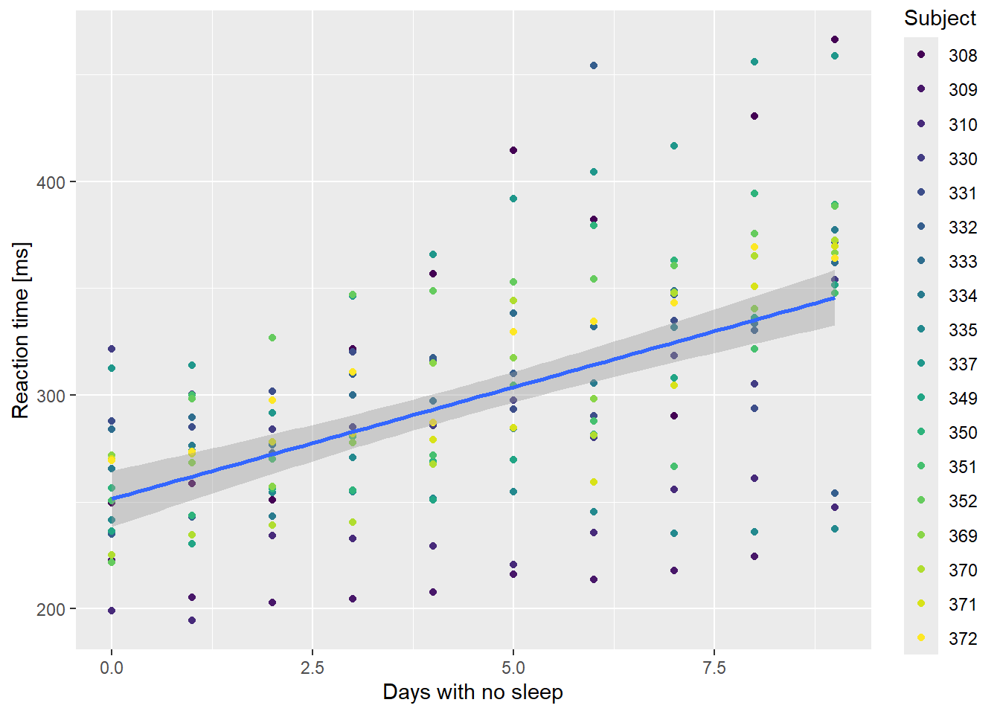

Linear Mixed Models
Assigned Reading:
- Harrison XA, Donaldson L, Correa-Cano ME, Evans J, Fisher DN, Goodwin CED, Robinson BS, Hodgson DJ, Inger R. 2018. A brief introduction to mixed effects modelling and multi-model inference in ecology. PeerJ 6:e4794 https://doi.org/10.7717/peerj.4794.
- Oberpriller, J., de Souza Leite, M., & Pichler, M. (2022). Fixed or random? On the reliability of mixed‐effects models for a small number of levels in grouping variables. Ecology and Evolution, 12(7), e9062.
Overview
We will be covering linear mixed models in this lab using two different datasets:
- First, we will use the ‘sleepstudy’ dataset that comes loaded with the lme4 package. From the help documentation: The average reaction time per day for subjects in a sleep deprivation study. On day 0 the subjects had their normal amount of sleep. Starting that night they were restricted to 3 hours of sleep per night. The observations represent the average reaction time on a series of tests given each day to each subject.
- Second, we will use a ‘mice’ dataset, which was collected by January Frost at the University of Nebraska. The mice dataset contains morphological measurements of mice caught at various sites in the Niobrara Valley.
Here’s a pretty picture from the Niobrara Valley Preserve (which you should 100% visit if you can) to inspire you:

# List of packages necessary to run this script:
require(librarian, quietly = TRUE)
shelf(tidyverse, cowplot, performance,
AICcmodavg, # for model selection
lme4, # For mixed modeling
lmerTest,
DHARMa, # For checking mixed model residuals, etc.
pander,
broom.mixed,
lib = tempdir(),
quiet = TRUE)
# Set the web address where R will look for files from this repository
# Do not change this address
repo_url <- "https://raw.githubusercontent.com/LivingLandscapes/Course_EcologicalModeling/master/"
# Load our two datasets
# NOTE: 'sleepstudy' data comes loaded in lme4
mice <- read.table(paste0(repo_url, "/data/mice.txt"),
header = TRUE)
# Set seed
set.seed(123)Sleep Study
Simple linear regression
First, let’s simply model the response of reaction time to number of days without sleep. On your own:
- Do some quick data exploration (e.g., familiarize yourself with the data columns, their ranges, etc.)
- Interpret the results of the linear regression below.
# Simple linear regression between reaction time and number of days without
# sleep.
ss.lm <- lm(Reaction ~ Days, sleepstudy)
# summary(ss.lm)Hopefully, you will have determined that (unsurprisingly) reaction time tends to slow as days without sleep increased.
However, you will also hopefully have noticed that there were several “subjects” of the experiment and that each subject’s response times were measured multiple times… Do we think there’s any variation between subject response times? Let’s check it out:
ssBase <-
ggplot(sleepstudy,
aes(x = Days,
y = Reaction)) +
geom_point(aes(color = Subject)) +
scale_color_viridis_d() +
labs(x="Days with no sleep",
y="Reaction time [ms]") +
geom_smooth(method = "lm", formula = y ~ x)
ssBase
Yep, look like some variation to me! Let’s plot the relationship for each subject individually and see what happens:
# group by subject
ssBase +
facet_wrap( ~ Subject) +
guides(color = FALSE) # suppress legend because facet labels do the job
If the relationship is plotted separately for each individual in the dataset, then the signal gets much stronger. Clearly, people differ in their responses to sleep deprivation. One subject got faster as they missed out on sleep!
We could fit a separate model to each subject and combine them. This is effectively a Subject * Days interaction model.
# Fit a separate linear regression to each subject
fm1 <- lme4::lmList(Reaction ~ Days | Subject, sleepstudy)
# Get the coefficients from the list of linear regressions:
coef(fm1)## (Intercept) Days
## 308 244.1927 21.764702
## 309 205.0549 2.261785
## 310 203.4842 6.114899
## 330 289.6851 3.008073
## 331 285.7390 5.266019
## 332 264.2516 9.566768
## 333 275.0191 9.142045
## 334 240.1629 12.253141
## 335 263.0347 -2.881034
## 337 290.1041 19.025974
## 349 215.1118 13.493933
## 350 225.8346 19.504017
## 351 261.1470 6.433498
## 352 276.3721 13.566549
## 369 254.9681 11.348109
## 370 210.4491 18.056151
## 371 253.6360 9.188445
## 372 267.0448 11.298073The lmList() function fits a different linear model to
each subset of a data.frame defined by the variable after the “|”, in
this case “Subject”.
On your own:
- Calculate the mean intercept and Days coefficients from the matrix
created by
coef(fm1). - Compare these with the estimates from the single regression model.
- Use
summary(fm1)to see the residual variance and degrees of freedom for the pooled list. Compare these values with the residual variance and degrees of freedom from the single regression model.
Ask Caleb to confirm your answers once you’ve completed this!
Mix it up!
We can use a mixed model approach to get the best of both worlds - an estimate of the population average intercept and slope, and an idea of how much variation there is among individuals. The function lmer() in package lme4 is the method of choice here. The fixed effects part of the formula is identical to the lm() formula, with a response variable on the left of the ˜ and a covariate on the right. The new part specifies the random effects, and these are given in (). To the left of the | are the fixed effects that will vary among groups, and to the right of the | are the variable(s) that specify the groups. In this case the variable Subject defines the groups. As with other formulas, the intercept is implicit, so (Days | Subject) indicates that both the intercept and the slope are allowed to vary among subjects. This is the same as fitting a separate line to each subject, as we did above.
# fit a linear mixed model
ss.mm <-
lmer(Reaction ~ Days + (Days | Subject),
sleepstudy,
REML = FALSE) # NOTE: you have to specify REML vs ML in lmer
# summary(ss.mm)Looking at the summary of the mixed model, you should see a “fixed effects” section which is identical to that from a normal lm() fit, with one notable exception. There are no p-values reported for each coefficient. This isn’t a mistake, it is a deliberate choice by the software designer to avoid an argument over the correct number of degrees of freedom to use for the test!
On your own, compare the estimates and standard errors with those from the “lmList” and “lm” models above.
The new bit is the section labelled “Random effects”. We can see that the model has estimated not just one variance, but three, plus a correlation coefficient. One variance estimate is the residual variance, with the same interpretation as always. The other two variances indicate the variance of the “random effects” on the intercept and the slope. These random perturbations to the population are assumed to be correlated to some extent, so there is also a correlation parameter. In this case the random effects are relatively uncorrelated.
We can also get the random perturbations for each group, and combining those with the population level coefficients gives us the coefficients for the line in each group, as shown in the following table. When the random effects (shown in the left 2 columns) are negative, the coefficients for the group are less than the population coefficients, and when they are positive, the group coefficients are greater.
| (Intercept) | Days | (Intercept) | Days | |
|---|---|---|---|---|
| 308 | 2.815789 | 9.0755068 | 254.2209 | 19.5427927 |
| 309 | -40.047855 | -8.6441517 | 211.3572 | 1.8231343 |
| 310 | -38.432497 | -5.5134706 | 212.9726 | 4.9538154 |
| 330 | 22.831765 | -4.6586649 | 274.2369 | 5.8086211 |
| 331 | 21.549515 | -2.9444450 | 272.9546 | 7.5228409 |
| 332 | 8.815409 | -0.2351823 | 260.2205 | 10.2321037 |
| 333 | 16.441662 | -0.1587747 | 267.8468 | 10.3085113 |
| 334 | -6.996565 | 1.0327116 | 244.4085 | 11.4999975 |
| 335 | -1.037586 | -10.5994054 | 250.3675 | -0.1321194 |
| 337 | 34.665787 | 8.6324457 | 286.0709 | 19.0997317 |
| 349 | -24.557658 | 1.0643244 | 226.8474 | 11.5316104 |
| 350 | -12.334275 | 6.4716420 | 239.0708 | 16.9389280 |
| 351 | 4.273930 | -2.9553195 | 255.6790 | 7.5119665 |
| 352 | 20.621878 | 3.5617510 | 272.0270 | 14.0290370 |
| 369 | 3.258488 | 0.8717165 | 254.6636 | 11.3390024 |
| 370 | -24.709766 | 4.6596445 | 226.6953 | 15.1269305 |
| 371 | 0.723250 | -0.9710500 | 252.1284 | 9.4962360 |
| 372 | 12.118728 | 1.3107215 | 263.5238 | 11.7780074 |
In the following figure I’ve plotted the intercepts for each group from the mixed model against the intercepts from the list of models. If they were identical they would fall on the solid line.
# Combine mixed model and linear regression coefficients
shrink <-
data.frame(coef(ss.mm)$Subject %>%
rename(Random_Intercept = `(Intercept)`,
Random_Days = Days),
cc %>%
rename(Fixed_Intercept = `(Intercept)`,
Fixed_Days = Days))
# Manipulate data for ggplotting
t1 <-
shrink %>%
pivot_longer(names(shrink),
values_to = "estimate",
names_to = "coefficient") %>%
separate_wider_delim(cols = "coefficient",
names = c("model", "coefficient"),
delim = "_") %>%
group_by(model) %>%
mutate(id = row_number()) %>%
pivot_wider(names_from = "model",
values_from = "estimate")
# phew! that was more work than I expected.
# make a little dataframe for the average point
meanpoint <-
data.frame(
coefficient = c("Intercept", "Days"),
Random = fixef(ss.mm),
Fixed = coef(ss.lm)
)
# now make the plot ... easier b/c of data manipulation?
ggplot(t1,
aes(x = Fixed,
y = Random)) +
geom_point() +
facet_wrap(~ coefficient,
scales = "free") +
geom_smooth(method = "lm") +
geom_abline(slope = 1,
intercept = 0,
linetype = 2) +
geom_point(data = meanpoint,
color = "violetred1",
size = 2)
Random effects coefficients are slightly biased towards the mean value indicated by the red dot. Therefore the blue line (fit to the points) has a slope less than 1. The dashed line has a slope of 1 and an intercept of 0. This phenomenon is called “shrinkage”, because the estimates of the within group coefficients “shrink” towards the population mean.
Mouse Example
Let’s look at the breakdown of the relationship between ear size and foot length by geographic site and sex. Do some quick data exploration of the ‘mice’ data to familiarize yourself with it. Also, please ignore that a normal distribution may or may not be the best for this data. Now, check out the faceted plot below:
# Remove rows with unknown sex.
mice = filter(mice, sex != "U")
# Plot relationship
basemouse <-
ggplot(mice,
aes(x = foot, y = ear)) +
geom_point(alpha = 0.2) +
xlab('Foot Length [mm]') + ylab('Ear Length [mm]')
basemouse +
geom_smooth(method = "lm") +
facet_wrap( ~ site)
Mouse Fig 1: Ear length vs. foot length in mm at a number of sites in the Northwest of Nebraska for two species of deer mouse.
A few things are obvious from this plot. First, there is a lot of data at a few sites, and much less at others. Some of the sex size effects are clear in a few sites (two groups of points), but much less clear in others. But most interesting is the variation in slope. In many sites the bigger the feet the bigger the ears. But not everywhere! Put it all in one plot, adjusting the alpha level so overplotting is clearer.

Mouse Fig 2: Ear length by foot length with a predicted line for each site. Shading indicates overlapping points.
So we want to check a model that lets the relationship between feet and ears vary by species and sex. The sites are a random sample of possible places we could look for mice, so we’ll treat site as a random effect. We can also see that the slope of the effect varies alot between sites, so we’ll let the coefficient of foot vary between sites too, at least initially. Here’s the global model, and check the residuals:
# Global mixed mouse model!
mice.global <-
lmer(ear ~ foot * species * sex + (foot | site),
data = mice)
# Check residuals with DHARMa
simulateResiduals(mice.global, plot = TRUE)## Object of Class DHARMa with simulated residuals based on 250 simulations with refit = FALSE . See ?DHARMa::simulateResiduals for help.
##
## Scaled residual values: 0.656 0.544 0.468 0.568 0.456 0.716 0.452 0.512 0.452 0.436 0.432 0.228 0.524 0.504 0.332 0.708 0.272 0.768 0.652 0.548 ...The simulated residuals look fine per DHARMa. However, the significant KS test indicates we may not be using the best probability distribution (he says sheepishly).
But regardless, let’s fit a range of models with different random effects structures, and compare using AICc. The problem with comparing different random effects using Likelihood Ratio tests is that our null hypothesis is “on the boundary” of the parameter space, because you can’t have negative variances. Choosing a model that has the minimum AICc won’t be bothered by this consideration, but this would affect the calculation of the weights.
# uncorrelated random effects # NOTE: Does not converge!
mice.1 <-
lmer(ear ~ foot * species * sex + (foot - 1 | site) + (1 | site),
data = mice)
# only random slope
mice.2 <-
lmer(ear ~ foot * species * sex + (foot - 1 | site),
data = mice)
# only random intercept
mice.3 <-
lmer(ear ~ foot * species * sex + (1 | site),
data = mice)
# Model selection for random effects.
# NOTE: AICcmodavg and MuMIn functions won't work because these models are
# different "classes". Check it out if you're interested:
# lapply(list(mice.global, mice.1, mice.2, mice.3), class)
aicc <- sapply(list(mice.global, mice.1, mice.2, mice.3), AICc)
knitr::kable(
cbind(
Model = c("Correlated", "Uncorrelated", "Slope", "Intercept"),
AICc = format(aicc, digits = 5
)
))| Model | AICc |
|---|---|
| Correlated | 3641.2 |
| Uncorrelated | 3671.7 |
| Slope | 3671.1 |
| Intercept | 3671.0 |
We’re in luck, the model with both a random slope and intercept where the effects are correlated has the lowest AICc, and by a large margin.
However, we still need to select the best fixed effect structure too! To do that, we need to create some candidate models based off the global fixed effects while always using the random effect structure we identified. And critically, we need to use Maximum Likelihood to compare fixed effects.
On your own, create a candidate model list to identify which fixed effect structure has the most support.
… Pausing while you do this…
Okay, so you may have found that your final model is:
ear ~ foot + (1+foot|site). This means the relationship
between ear and foot length is constant between sexes and species, but
varies geographically. I find that quite fascinating. I’ll fit this
final model, and make a plot or two.
Predictions with mixed models
You can make predictions from these models just as you would with other models. Below, we have a plot showing all predicted ear/foot relationships by site.
# Example of final model
mice.final <- lmer(ear ~ foot + (1+foot|site),
REML = FALSE,
data = mice)
# Create a new data.frame with all site/foot length combinations
nd <- expand.grid(foot = seq(min(mice$foot),
max(mice$foot),length=50),
site = unique(mice$site))
# Conditional prediction
pred_conditional <-
data.frame(fit = predict(mice.final, newdata = nd, re.form = NULL),
nd)
# Plot the predictions
ggplot() +
geom_point(data = mice,
mapping = aes(x = foot, y = ear),
alpha = 0.2) +
scale_color_viridis_d() +
xlab('Foot Length [mm]') +
ylab('Ear Length [mm]') +
geom_line(data = pred_conditional,
mapping = aes(x = foot,
y = fit,
group = site,
color = site)) +
theme(legend.position = "none") # Too busy with all sites, so kill legend
We say the predictions in the above plot are “conditional” on the random effects, because they include the perturbations from the random effects. Another thing you might want are predictions “unconditional” on the random effects. The line below represents the relationship between ears and feet we expect to find at a randomly chosen new site.
# Create a new data.frame with just one site
nd2 <- expand.grid(foot = seq(min(mice$foot),
max(mice$foot),length=50),
site = unique(mice$site)[1]) # Choose one site
# Conditional prediction
pred_unconditional <-
data.frame(fit = predict(mice.final, newdata = nd, re.form = NA),
nd2)
# Plot the predictions
ggplot() +
geom_point(data = mice,
mapping = aes(x = foot, y = ear),
alpha = 0.2) +
scale_color_viridis_d() +
xlab('Foot Length [mm]') +
ylab('Ear Length [mm]') +
geom_line(data = pred_unconditional,
mapping = aes(x = foot,
y = fit),
color = "darkred",
linewidth = 2)
What about confidence intervals on our predictions? A very good question, young grasshopper, but one that will have to wait!